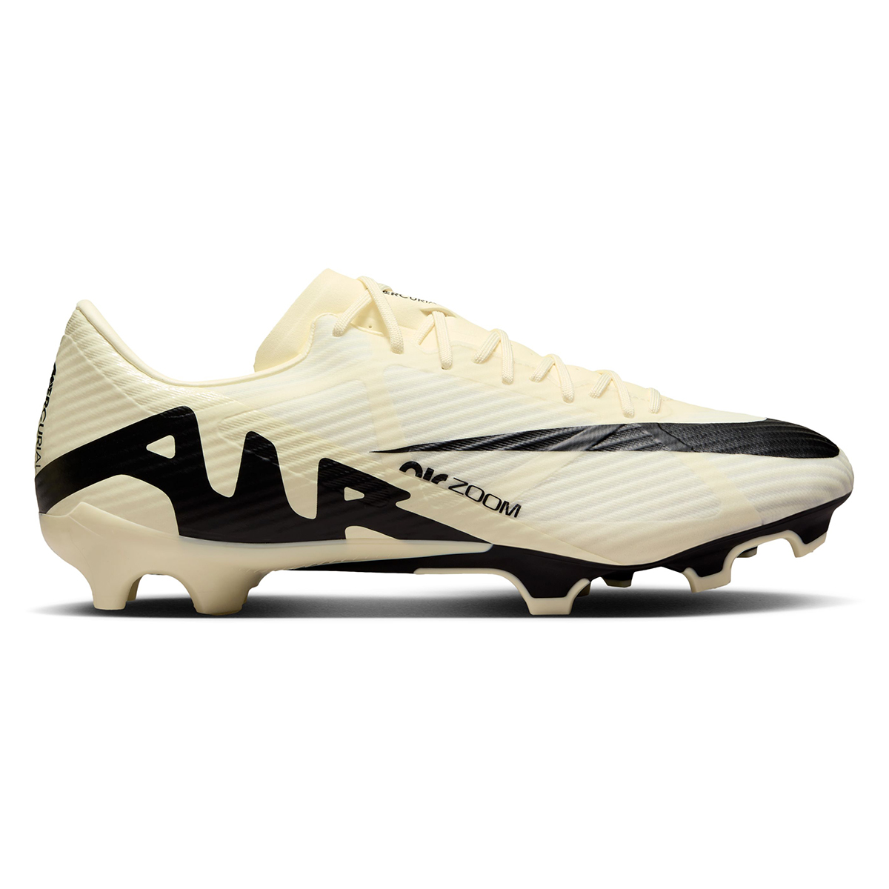

Botines Fútbol Nike Mercurial Vapor 15 Academy Fg
$154.999
COMPRAR
Botines Fútbol adidas Predator Elite Fg
$369.999
COMPRAR
Botines Fútbol Nike Tiempo Legend 10 Elite Fg Hombre
$389.999
COMPRAR
Botines Fútbol Nike Phantom Gx Elite Ag-pro Hombre
$419.999
COMPRAR
Botines Nike Mercurial Vapor Xiii Academy Mg NiÑo/a
83.300
comprar
Botines De Futbol Puma Future Match FG/AG Azulino
139.999
COMPRAR